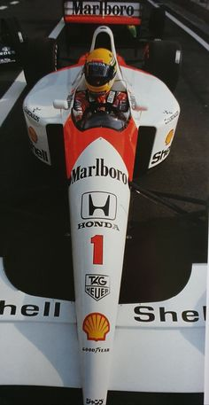
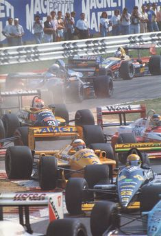
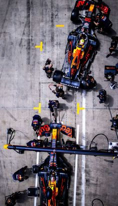
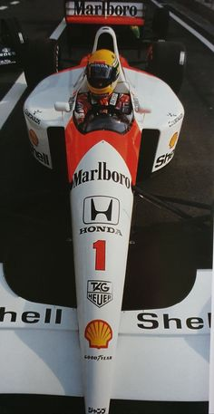
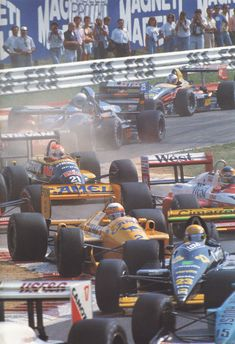
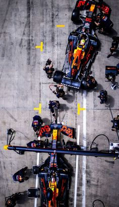

Предстоящие события:
ГРАН ПРИ БАХРЕЙНА 29 февраля–2 марта. Сахир
До старта:
Формула-1
Формула-1, часто сокращаемая как F1, - это вид гонок на открытых колесах, санкционированный Международной федерацией автомобилестроения (FIA). Это высший класс автомобильных гонок, и он регулируется сводом правил и предписаний, призванных обеспечить безопасность и честность.
Болиды
Этот вид спорта известен своими скоростными гонками и технической сложностью. Автомобили спроектированы так, чтобы быть чрезвычайно легкими, с минимальным весом 786 кг, и в них используются 18-дюймовые колеса и шины.
Двигатели
Автомобили приводятся в действие комбинацией 1,6-литрового двигателя V6 с турбонаддувом и аккумулятора, который может быть использован для обеспечения дополнительного увеличения мощности. Эта гибридная система позволяет автомобилям выдавать более 800 лошадиных сил. Каждому гонщику разрешается использовать не более трех силовых агрегатов за сезон, прежде чем он понесет штрафные санкции от электросети.
Автодромы
Гонки проводятся на автодромах, которые представляют собой специально спроектированные трассы, построенные по стандартной схеме, обеспечивающей согласованность на разных трассах. Гонки обычно длятся от 2 до 3 часов, и их часто транслируют по телевидению по всему миру.
"НОВОСТИ"


История Формулы-1
Формула-1 - это всемирно признанный и очень престижный автоспорт, который стал свидетелем бесчисленного множества легендарных пилотов, новаторских инноваций и незабываемых моментов. Его история представляет собой богатую историю технических достижений, конкуренции и человеческих амбиций.
Ранние годы (1946-1950)
Истоки Формулы-1 можно проследить до конца 1800-х годов, почти сразу после изобретения автомобиля с двигателем внутреннего сгорания. Первое соревнование было проведено в 1894 году - тест на надежность между Парижем и Руаном во Франции.
Спорт в том виде, в каком мы его знаем сегодня, начал формироваться в эпоху после Второй мировой войны. В 1946 году была основана Международная федерация автомобилестроения (FIA) с основной целью регулирования и продвижения международных автогонок. В это время автогонки ввели новую формулу, сначала названную Формулой А, которая включала автомобили с двигателями объемом 1500 куб. см с наддувом и 4500 куб. см без наддува. Дистанция гонки была сокращена с 311 миль (500 км) до 186 миль (300 км). В итоге было использовано название "Формула-1", которое должно было стать вершиной автоспорта.
Первая гонка чемпионата мира Формулы-1 состоялась в Сильверстоуне в Соединенном Королевстве в 1950 году, ее выиграл Джузеппе Фарина за рулем Alfa Romeo. Чемпионат состоял из семи гонок, проходивших в Европе.
Британская эра
Первые годы существования Формулы-1 отличались простотой по сравнению с современными высокотехнологичными машинами. Автомобили представляли собой двигатели большого объема, установленные спереди с минимальными испытаниями и усовершенствованиями конструкции. Появление среднемоторных автомобилей в конце 1950-х произвело революцию в спорте. Эти агрегаты позволили для лучшего распределения веса и улучшения управляемости. 1960-е годы часто называют британской эпохой, когда доминировали такие команды, как Cooper, BRM, Brabham и Lotus.
Эра крыльев и наземного эффекта
1970-е годы ознаменовались несколькими значительными событиями в Формуле-1. Появление крыльев и спойлеров значительно улучшило аэродинамику автомобилей, позволив им развивать более высокие скорости и улучшать управляемость. Технология Ground-effect, внедренная в конце 70-х годов, еще больше улучшила управляемость автомобилей. Эта система создала зону низкого давления под автомобилем, что увеличило прижимную силу и сцепление.
Двигатель В 1960-Х И 70-Х Годах
Успех двигателя в 1960-х и 70-х годах помог закрепить его место в истории Формулы-1. На протяжении многих лет двигатель модифицировался и совершенствовался, а в 1980-х и 90-х годах были представлены новые версии. Несмотря на эти изменения, базовая конструкция двигателя в основном осталась прежней. Он продолжал использоваться многими успешными командами на протяжении всей истории этого вида спорта.
Новые правила и предписания
В 2000-е годы также произошло несколько изменений в правилах "Формулы-1". В 2003 году FIA ввела новые правила, регулирующие конструкцию и использование двигатели. Правила требовали, чтобы все команды использовали двигатели V10, которые были более мощными, чем предыдущие двигатели V8. Однако новые двигатели также были менее надежными, что привело к ряду отказов двигателей во время гонки.
Технологические достижения
В 21 веке Формула-1 стала все больше полагаться на технологии. Одним из самых больших изменений стало внедрение рекуперации кинетической энергии Система (KERS) в 2009 году. Эта система позволила водителям восстанавливать энергию, потерянную при торможении, и использовать ее для увеличения ускорения.
Революция в области безопасности
Безопасность всегда была главной заботой в Формуле-1. После трагической гибели Айртона Сенны в 1994 году FIA внесла значительные изменения для повышения безопасности. В 21 веке эти усилия продолжались, что значительно сократило число несчастных случаев и смертельных исходов.
Битва между Хэмилтоном И Ферстаппеном
Битва между Льюисом Хэмилтоном и Максом Ферстаппеном стала одним из самых жарких и напряженных противостояний в новейшей истории Формулы-1. Оба гонщика были на переднем крае спорта в течение нескольких лет, причем Хэмилтону принадлежит рекорд по количеству выигранных чемпионатов.
Эра турбокомпрессоров и инновации в материалах
1970-е годы также стали свидетелями появления турбокомпрессоров в Формуле-1. Первоначально использование турбокомпрессоров было ограничено из-за использования запорных клапанов и ограничений по расходу топлива, что привело к их запрету в 1988 году. Однако в течение следующих 25 лет восприятие турбонаддувов начало меняться. Они больше не были просто способом получения большего количества энергии, но также могли повысить эффективность и сократить выбросы. Таким образом, в 2014 году Формула-1 вернула их в их нынешнем облике 1,6-литрового турбированного двигателя V6 с гибридным приводом, и с тех пор они остаются стандартными.
Инновации в материалах также сыграли ключевую роль в эволюции Формулы-1. Безопасность водителя имеет первостепенное значение в Формуле-1, и материалы, используемые в автомобилях Формулы-1, подбираются с особой тщательностью. Наиболее часто используемым материалом в автомобилях Формулы-1 являются композиты из углеродного волокна, составляющие около 80 процентов конструкции автомобиля. Композиты из углеродного волокна обладают рядом преимуществ, таких как высокая прочность, малый вес и высокая жесткость. Это делает их идеальными в качестве материалов для изготовления шасси. Другие материалы, такие как титан, используются для изготовления критически важных компонентов, таких как подвеска и коробка передач, из-за их высокой соотношение прочности к весу.
Эпоха аэродинамики и анализа данных
Воздушный поток играет решающую роль в дизайне болидов Формулы-1, учитывая высокие скорости, которых они достигают. Таким образом, аэродинамика автомобиля Формулы-1 так же важна, как и двигатель. Кузов автомобиля обтекаем за счет сглаживания контуров кузова, сведения к минимуму острых углов и уменьшения лобовой площади автомобиля, что помогает уменьшить турбулентность и лобовое сопротивление. Аэродинамические характеристики также помогают свести к минимуму подъемную силу, которая представляет собой восходящую силу, действующую на автомобиль при движении. Передняя и задние крылья работают в тандеме с диффузорами под автомобилем, создавая зону низкого давления, генерирующую прижимную силу. Прижимная сила противодействует подъему , повышая сцепление с дорогой и устойчивость автомобиля, позволяя водителю поворачивать на более высоких скоростях, не теряя управляемости.
Команды используют аэродинамические трубы для тестирования различных форм и конструкций кузова, чтобы свести к минимуму лобовое сопротивление и максимизировать прижимную силу. В дополнение к этому команды Формулы-1 используют инновационные инженерные методы, такие как анализ вычислительной гидродинамики (CFD), позволяют улучшить эксплуатационные характеристики автомобиля. По сути, это симуляция болида Формулы-1 для оценки того, как газы (которые являются жидкостями) повлияют на характеристики болида.
Мощность и конструкция двигателя
Двигатели, используемые в Формуле-1, являются очень сложным оборудованием и, очевидно, играют огромную роль в скорости и эксплуатационных характеристиках автомобиля. С 2014 года двигатели Формулы-1 должны быть четырехтактными, гибридными, V6 рабочим объемом 1,6 литра и турбонаддувом для увеличения выходной мощности. Мощность, вырабатываемая двигателем Формулы-1, зависит от его скорость вращения, а с 2021 года она была ограничена до 15 000 оборотов в минуту (об/мин). Двигатель болида Формулы-1 выдает мощность почти в 1000 лошадиных сил.
Будущее Формулы-1
Формула-1 всегда была на переднем крае технологических инноваций. Неустанное стремление этого вида спорта к совершенствованию привело к значительным достижениям в области мощности двигателей, аэродинамики, материаловедения и анализа данных. Заглядывая в будущее, мы можем ожидать, что эта тенденция сохранится. Такие производители, как Audi, объявляют о своих планах будущее Формулы-1, которое начнется в 2026 году, обещает быть таким же захватывающим и инновационным, как и ее прошлое.
ГАЛЕРЕЯ
 




